Informatica BDM对接FusionInsight¶
适用场景¶
Informatica 10.0.0 ↔ FusionInsight HD V100R002C50 (HDFS/HBase/Hive)
Informatica 10.0.0 ↔ FusionInsight HD V100R002C60U20 (HDFS/HBase/Hive)
Informatica 10.0.0 ↔ FusionInsight HD V100R002C80SPC200 (HDFS/Hive)
Informatica 10.2.2 ↔ FusionInsight HD 6.5 (HDFS/HBase/Hive)
Informatica 10.2.2 ↔ FusionInsight MRS 8.0 (HDFS/Hive)
注：以上对接测试Informatica BDM采用的是Native Engine。Informatica 10.2.2对接FusionInsight HD 6.5 HBase组件时，需要Zookeeper组件配置enforce.auth.enabled=false，否则对接失败。
简介¶
Informatica用于管理大数据工程的工具主要有Informatica Administrator、Infoormatica Analyst和Informatica Developer。
本文档主要描述Linux操作系统安装Informatica 10.2.2服务端（Informatica Administrator）并使用Oracle数据库管理域数据、连接数据等，在Window操作系统安装Informatica客户端Big Data Developuser（Informatica Developer其中一种工具）。Informatica服务端与FusionInsight HD的HDFS和Hive对接成功后，通过Informatica的Big Data Developer客户端实现Oracle数据库、HDFS、Hive、HBase之间数据互传。
本文档的描述使用的Informatic Server安装节点的IP为172.16.6.120，主机名为172-16-6-120。对接的FusionInsight HD集群节点的IP分别是172.16.4.21/172.16.4.22/172.16.4.23.
准备工作¶
-
登录FusionInsight Manager创建一个“人机”用户，例如：developuser，具体请参见FusionInsight HD产品文档的
管理员指南->系统设置->权限设置->用户管理->创建用户章节。给developuser用户授予所有访问权限，包含但不限于HDFS、Hive、HBase。 -
已完成FusionInsight HD客户端安装，具体请参见FusionInsight HD产品文档的
应用开发指南->安全模式->安全认证->配置客户端文件章节。 -
已将集群的节点主机名与IP的映射关系加入到windows的hosts文件中
C:\Windows\System32\drivers\etc\hosts。 -
Windows上已经安装好jdk1.8或者以上版本，并完成jdk环境变量配置。
-
将FusionInsight客户端HDFS、HIVE、HBASE以下相关的配置文件拷贝至
C:\ecotesting\hadoopConfig目录下，并压缩为 hadoopConfig.zip。 -
..\FusionInsight_Cluster_1_Services_ClientConfig\HDFS\config的hdfs-site.xml、core-site.xml。 -
..\FusionInsight_Cluster_1_Services_ClientConfig\Hive\config的hive-site.xml、hivemetastore-site.xml。 -
..\FusionInsight_Cluster_1_Services_ClientConfig\HBase\config的hbase-site.xml。 -
..\FusionInsight_Cluster_1_Services_ClientConfig\Yarn\config的mapred-site.xml、yarn-site.xml。
安装Infomatica服务端¶
操作场景¶
在Linux上安装Infomatica Server。
前提条件¶
-
已完成准备工作。
-
安装节点上已安装好Oracle数据库。本指导文档安装版本为 Oracle Database 12c Enterprise Edition Release 12.2.0.1.0 - 64bit Production，非容器数据库，安装用户名为 oracle 并属于群组 oinstall，数据库SID为 orcl。
-
已获取Informatica服务端安装包，例如：informatica_1022_server_linux-x64.tar，并上传至安装节点的
/opt目录下。 -
已获取Informatica的License，例如：infa1022.key，并上传至安装节点的
/opt目录下。
操作步骤¶
安装服务端¶
- 安装Informatica服务端需要连接Domain和Model_Repository_Service的数据库用户。登录oracle数据库，创建两个用户，分别命名为 domain_user 和 mdl_user。
su - oracle
sqlplus / as sysdba
SQL> create tablespace rep_data datafile '/u01/app/oracle/oradata/orcl/rep_data_01.dbf' size 512m;
SQL> create user domain_user identified by domain_user default tablespace rep_data temporary tablespace temp;
SQL> create user mdl_user identified by mdl_user default tablespace rep_data temporary tablespace temp;
SQL> grant dba to domain_user,mdl_user;
SQL> exit

- 创建安装用户 infa 并归属于群组 oinstall。
su - root
useradd -g oinstall -d /home/infa infa
echo "Huawei@123" | passwd --stdin infa

- 使用 root 用户解压informatica_1022_server_linux-x64.tar至
/opt/informatica，设置拥有者为infa用户并赋予755的操作权限。
su - root
mkdir -p /opt/informatica
tar -xvf /opt/informatica_1022_server_linux-x64.tar -C /opt/informatica
chown -R infa:oinstall /opt/informatica
chmod -R 755 /opt/informatica
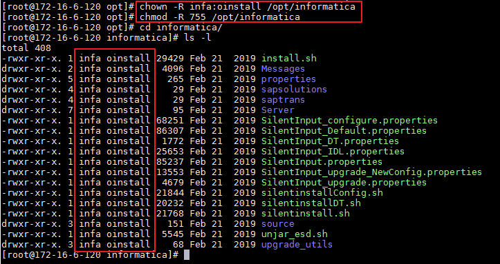
- 修改 infa 用户的环境变量。
su - infa
vi ~/.bash_profile
source ~/.bash_profile
添加环境变量如下所示：
PATH=$PATH:/u01/app/oracle/product/12.2.1/db_1/bin
export PATH
umask 022
export ORACLE_BASE=/u01/app/oracle
export ORACLE_HOME=/u01/app/oracle/product/12.2.1/db_1
export ORACLE_SID=orcl
export NLS_LANG=AMERICAN_AMERICA.AL32UTF8
export INFA_CODEPAGENAME="UTF-8"
export PATH=/opt/informatica/10.2.2/server/bin:$PATH
export LD_LIBRARY_PATH=$ORACLE_HOME/lib:/opt/informatica/10.2.2/server/bin
说明：12.2.1为oracle版本号，10.2.2为Informatica的版本号。
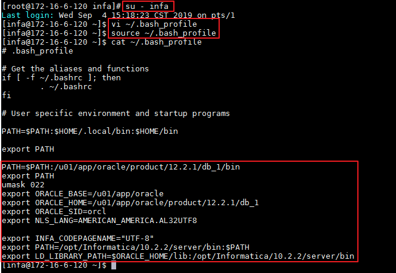
- 使用infa用户登录启动图形化终端开始安装。
su - root
export display=:0.0
xhost +
su - infa
export display=:0.0
cd /opt/informatica
./install.sh
说明：执行 xhost + 命令时，确认返回“access control disabled, clients can connect from any host”，才能继续执行后面的命令。

- 输入 y 选择继续安装，按 Enter 键进入下一步。

- 输入 1 选择“Install and configure Informatica Big Data suite products.”，按 Enter 键进入下一步。
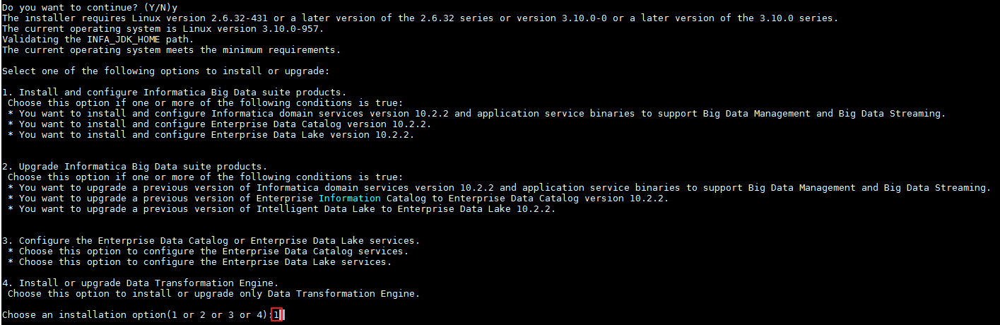
- 输入 3 选择“Run the installer.”，按 Enter 键进入下一步。

- 输入 2 选择“Yes”同意，按 Enter 键进入下一步。

- 输入 2 选择“Yes”继续，按 Enter 键进入下一步。
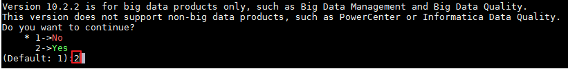
- 输入 1 选择“Install Informatica domain services.”，按 Enter 键进入下一步。
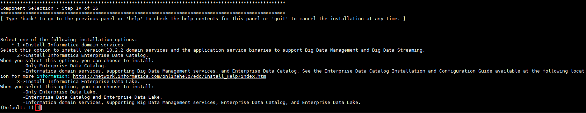
- 输入 2 选择“Yes”继续安装，按 Enter 键进入下一步。
- 输入 1 选择“No”不激活Kerberos认证，按 Enter 键进入下一步。

- 输入 1 选择“No”，按 Enter 键进入下一步。
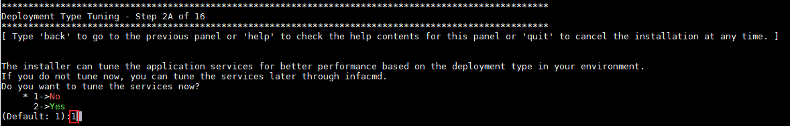
- 输入License的路径，例如：/opt/infa1022.key，按 Enter 键，输入安装路径（确保和环境变量~/.bash_profile配置的路径一致），例如：/opt/informatica/10.2.2，按 Enter 键进入下一步。

- 按 Enter 键开始安装。
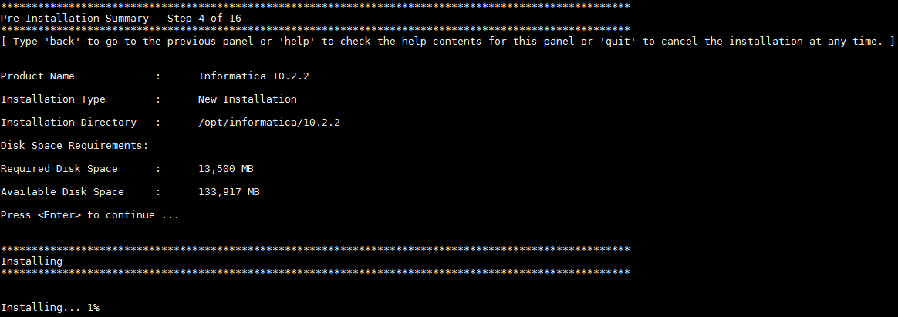
- 等待安装进度100%后，步骤5的选择创建Domain，具体配置如下图所示：

- 步骤6输入Domain的数据库配置信息，具体配置如下图所示：

- 步骤7输入自定义密码 Huawei@123，按 Enter 键进入下一步。
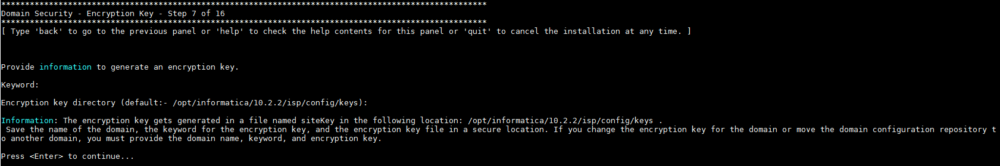
- 步骤8输入Domain的配置信息，按 Enter 键进入下一步。

- 步骤8B输入Model Repository Service的数据库配置信息，具体配置如下图所示：

- 步骤9输入Data Integration Service的配置信息，选择不创建CCO连接，具体配置如下图所示：

- 按 Enter 键结束安装。
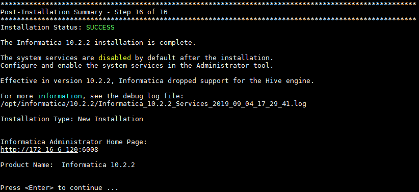
- 确认防火墙是关闭状态。
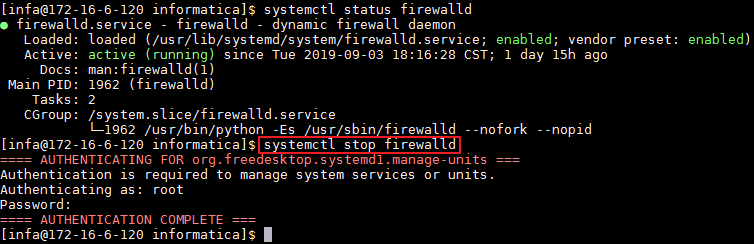
- 使用浏览器打开http://172-16-6-120:6008登录Informatica Administrator，登录用户名为 Administrator，密码为 Huawei@123，点击 登录。
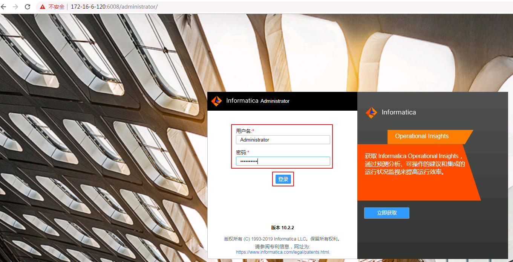
- 登录成功。

配置Informatica Server¶
配置Kerberos认证¶
-
登录FusionInsight Manager的
系统->用户->更多（developuser）->下载认证凭证，下载developuser对应的认证凭证。解压后，将 krb5.conf 上传至Infomatica Server安装节点的/opt目录下。 -
登录Informatica Server安装节点，将 krb5.conf 复制到
$INFA_HOME/java/jre/lib/security和$INFA_HOME/services/shared/security。命令执行示例如下所示：
chown infa:oinstall /opt/krb5.conf
cp /opt/krb5.conf /opt/informatica/10.2.2/services/shared/security/
cp /opt/krb5.conf /opt/informatica/10.2.2/java/jre/lib/security/
配置Data_Integration_Service¶
-
导航至
管理->服务和节点->Data_Integration_Service。点击“执行选项”的编辑按钮，设置“Hadoop Kerberos服务主体名称”为 developuser\@HADOOP.COM，“Hadoop Kerberos Keytab”为 /opt/user.keytab，点解 确定，选择 是，保存更改。
-
点击“Data_Integration_Service”的应用服务按钮
 ，点击 确定 让修改生效。
，点击 确定 让修改生效。
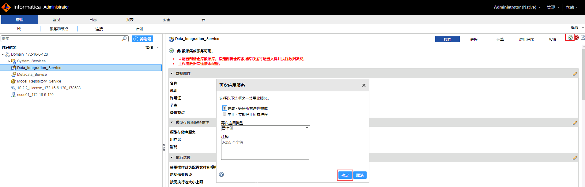
创建元数据访问服务¶
元数据访问服务是一项应用程序服务，它可让 Developer tool 访问 Hadoop 连接信息以导入和预览元数据。从Hadoop集群导入对象时，HBase、HDFS、Hive连接会使用元数据访问服务。
-
登录FusionInsight Manager的
系统->用户->更多（developuser）->下载认证凭证，下载developuser对应的认证凭证。解压后，将 user.keytab 上传至Infomatica Server安装节点的/opt目录下。 -
使用浏览器登录http://172-16-6-120:6008，登录用户名为 Administrator，密码为 Huawei@123。
-
导航至
管理->服务和节点，右键“Domain_172-16-6-120”，选择新->元数据访问服务。
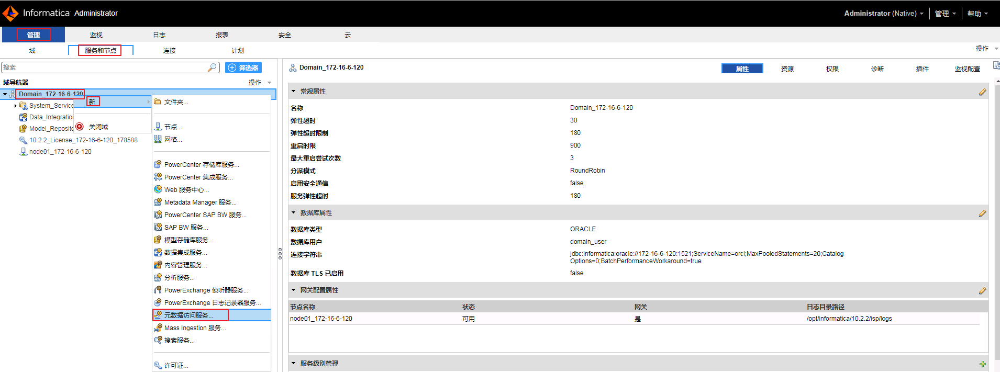
- “名称”自定义为 Metadata_Service，“位置”默认为 Domain_172-16-6-120，“许可证”选择有效的License，“节点”选择 node01_172-16-6-120。
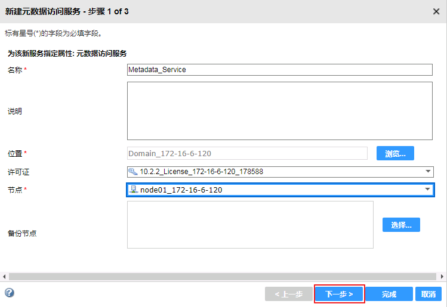
- 点击 下一步。
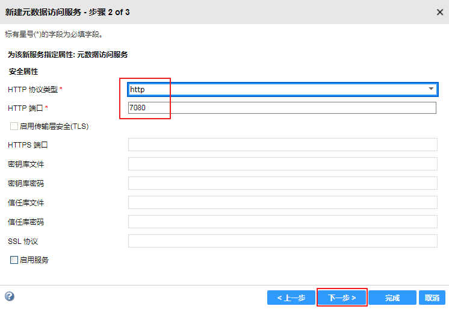
- “Hadoop Kerberos服务主体名称”输入 developuser\@HADOOP.COM，“Hadoop Kerberos Keytab”输入 /opt/user.keytab，点击 完成。
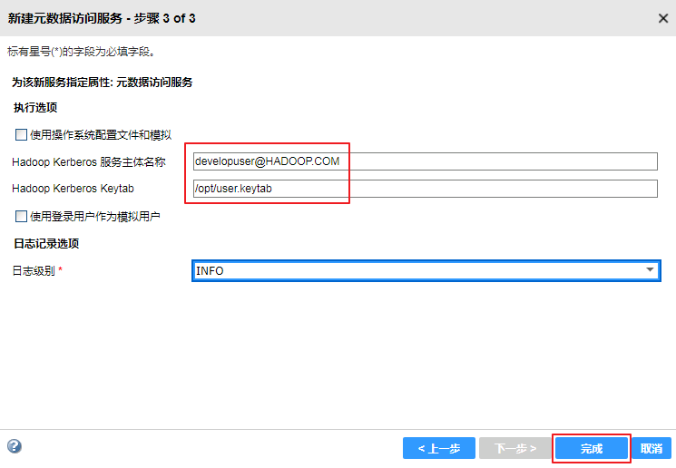
- 点击“Metadata_Service”右上角的按钮启用元数据访问服务。
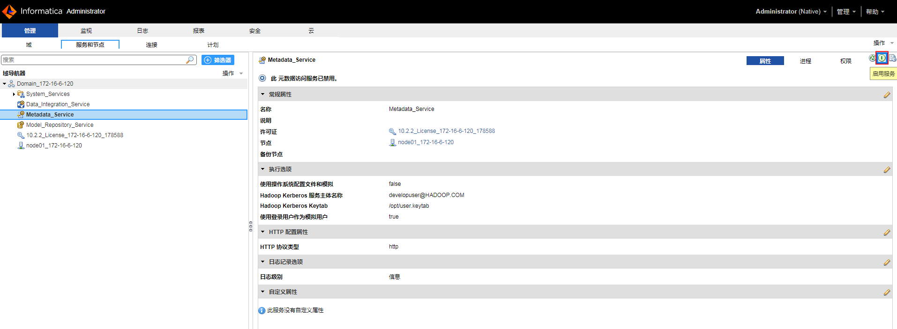
创建Informatica群集¶
元数据访问服务是一项应用程序服务，它可让 Developer tool 访问 Hadoop 连接信息以导入和预览元数据。从Hadoop集群导入对象时，HBase、HDFS、Hive连接会使用元数据访问服务。
- 导航至
管理->连接，右键“Domain_172-16-6-120->ClusterConfigurations”，选择新->群集配置。

- “群集配置名称”自定义为 FusionInsightHD，“分发类型”选择 Cloudera，“导入群集配置的方法”选择 从存档文件中导入，上载配置存档文件选择
C:\ecotesting\hadoopConfig.zip，勾选 创建连接，点击 下一步。
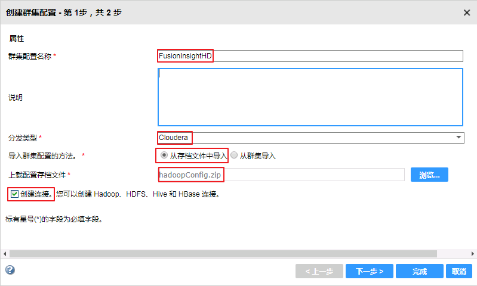
- 确认安装信息，点击 完成。
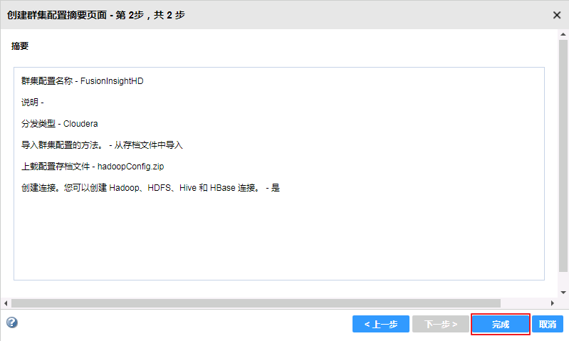
- 安装完成。
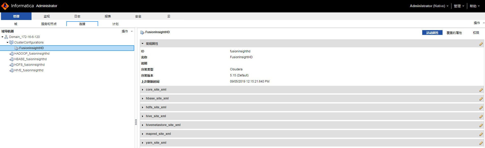
- 修改连接“HIVE_fusionginsighthd”以下共同属性。
元数据连接字符串：jdbc:hive2://172.16.4.21:21066/default;saslQop=auth-conf;principal=hive/hadoop.hadoop.com@HADOOP.COM
数据访问连接字符串：jdbc:hive2://172.16.4.21:21066/default;saslQop=auth-conf;principal=hive/hadoop.hadoop.com@HADOOP.COM
HDFS上的Hive暂存目录：/user/hive/warehouse
Hive暂存数据库名称：default
说明：如果需要向Hive写入数据，必须配置“HDFS上的Hive暂存目录”和“Hive暂存数据库名称”。
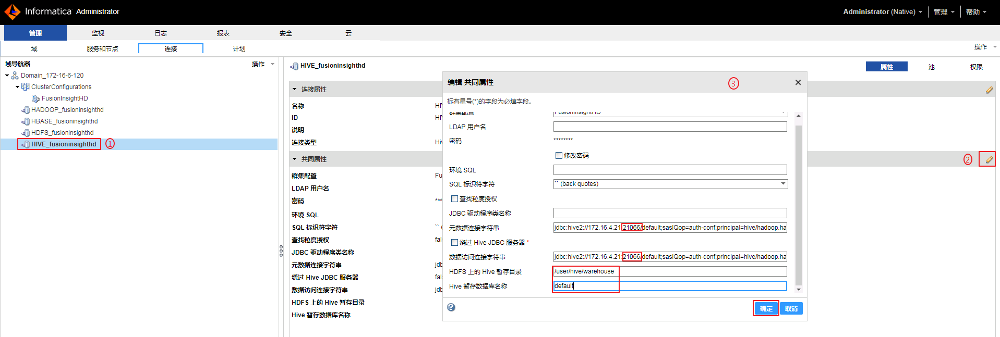
- 如果需要向Hive写入数据，必须将集成配置的 hdfs_site_xml 的 dfs.client.failover.proxy.provider.hacluster 的值修改为 org.apache.hadoop.hdfs.server.namenode.ha.ConfiguredFailoverProxyProvider。否则Mapping日志会返回类似“Class org.apache.hadoop.hdfs.server.namenode.ha.AdaptiveFailoverProxyProvider not found”的错误且写入失败。
选择群集“FusionInsightHD”，点击 hdfs_site_xml 的编辑按钮，选中 dfs.client.failover.proxy.provider.hacluster 后点击 编辑，“覆盖的值”输入 org.apache.hadoop.hdfs.server.namenode.ha.ConfiguredFailoverProxyProvider，点击 确定。点击 确定 完成修改。
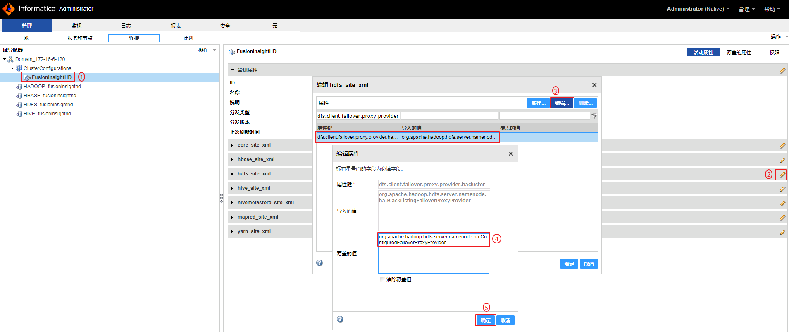
创建Oracle连接¶
- 导航至
管理->连接，右键“Domain_172-16-6-120”，选择新->连接。
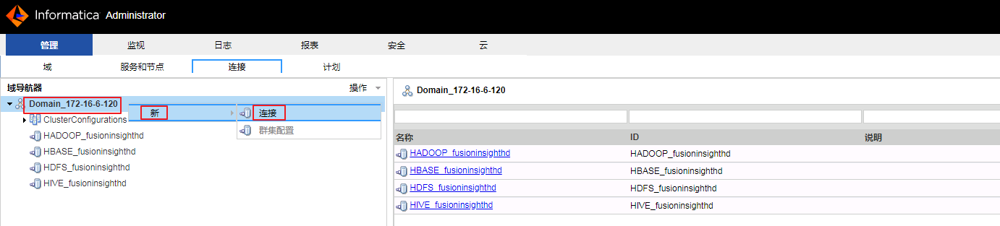
- 选择 Oracle，点击 确定。
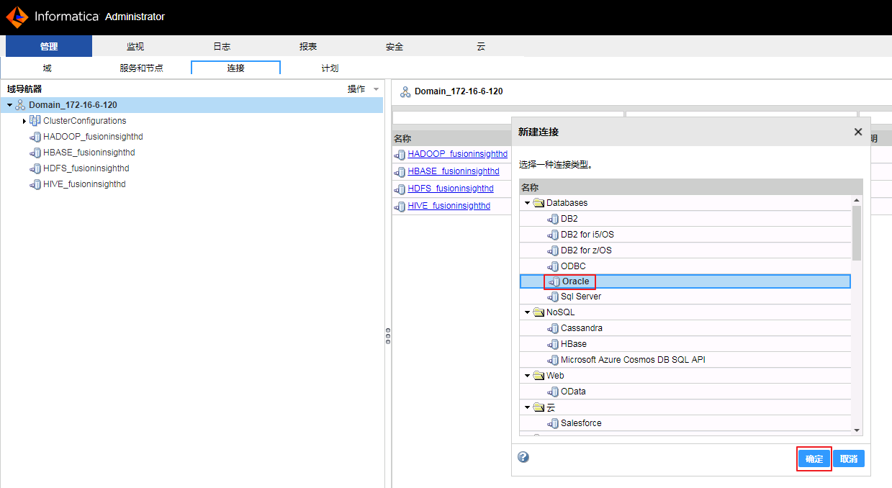
- “名称”和“ID”自定义为 ORACLE，“用户名”和“密码”都输入 mdl_user，点击 下一步。

- “元数据访问属性”的“连接字符串”输入 jdbc:informatica:oracle://172-16-6-120:1521;SID=orcl，“数据访问属性”的“连接字符串”为 orcl 和 “代码页”选择 UTF-8 encoding of Unicode，点击 下一步。
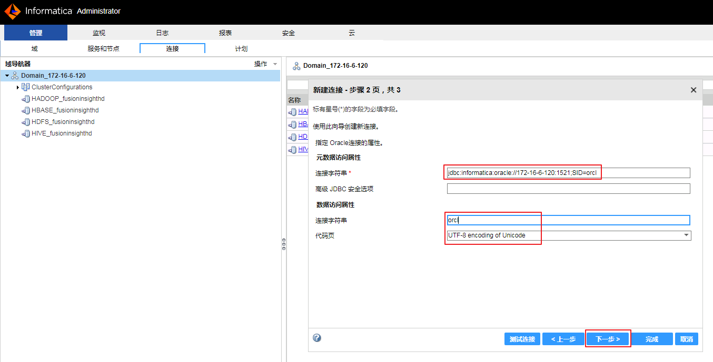
- 点击 测试连接 返回 “连接测试成功”，点击 完成。
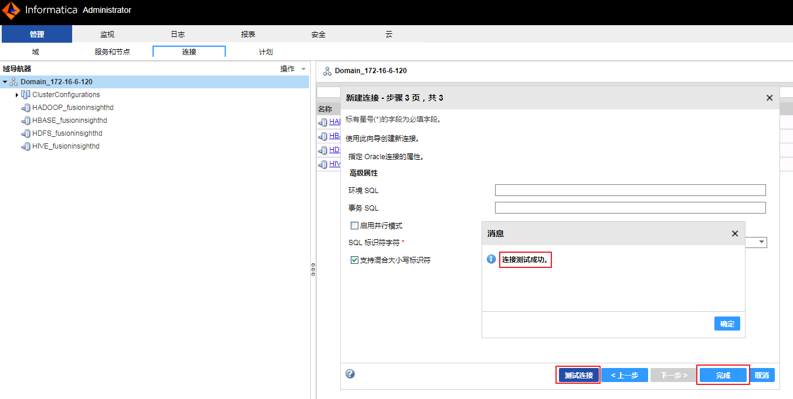
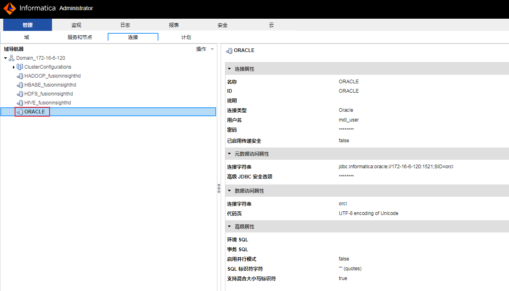
- 重启Informatica Server。关闭Informatica Server后，需要执行 ps -ef | grep informatica 检查所有的informatica进程都关闭后再启动Informatica Server。
su - infa
cd /opt/informatica/10.2.2/tomcat/bin
./infaservice.sh shutdown
ps -ef | grep informatica
./infaservice.sh startup
说明:如果新建ORACLE连接后未重启过Informatica Server，在客户端Big Data Developer运行ORACLE关系型数据对象时，返回类似以下的错误：
[LDTMCMN_0029] 由于以下错误，LDTM 无法完成请求: com.informatica.sdk.dtm.ExecutionException: [EdtmExec_00007] CMN_1022 Database driver error...
CMN_1022 [Database driver event...Error occurred loading library [libclntsh.so.11.1: cannot open shared object file: No such file or directory]Database driver event...Error occurred loading library [libpmora8.so]]
增加用户Administrator权限¶
- 导航至
安全->用户，选中用户->Native->Administrator，点击概览->编辑->组，点击 添加 按钮将 Operator 添加至“分配的组” ，点击 确定。
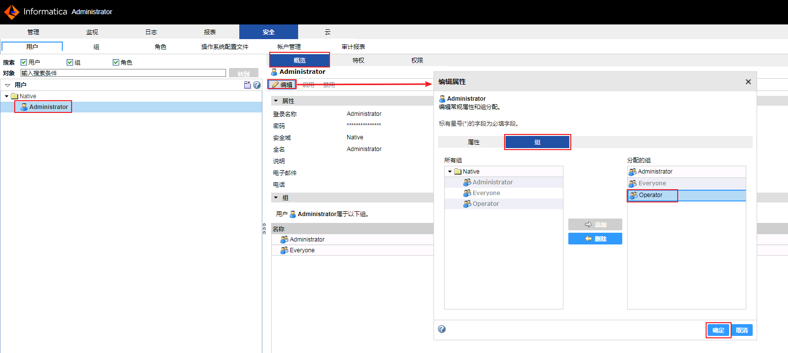
说明：如果用户不属于Operator组，使用该用户执行mapping从连接中获取数据时，会返回类似于“没有针对连接 [ORACLE] (在域 [Domain_172-16-6-120] 中)的执行权限”的错误。
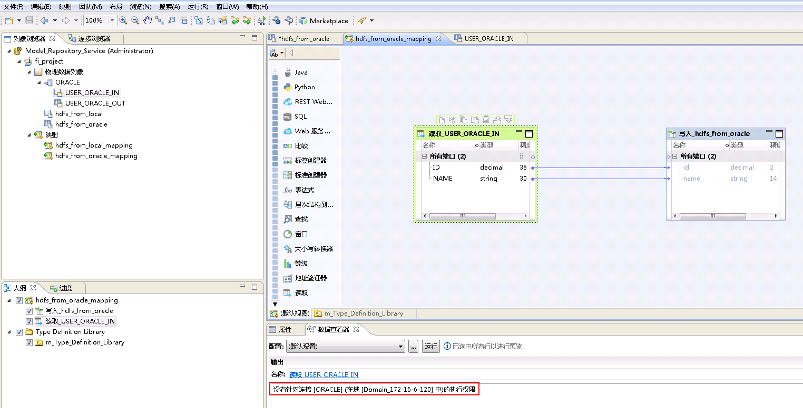
安装Big Data Developer客户端¶
操作场景¶
在Windows上安装Big Data Developer客户端。
前提条件¶
-
已完成准备工作。
-
已获取Informatica客户端安装包，例如：informatica_1022_client_winem-64t.zip。
操作步骤¶
安装客户端¶
- 解压informatica_1022_client_winem-64t.zip后，双击 install.bat。选择
安装Informatica Developer版本10.2.2，点击 下一页。

- 点击 下一页。

- 输入安装路径，默认安装路径为
C:\Informatica\10.2.2，点击 下一页。
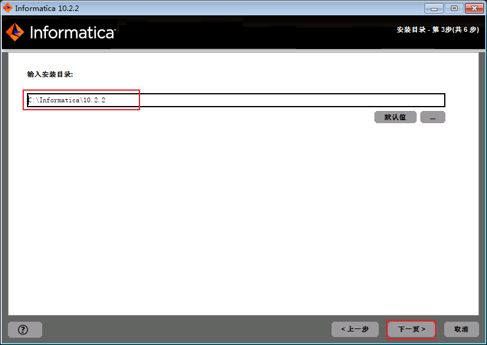
- 点击 安装 后等待安装完成。

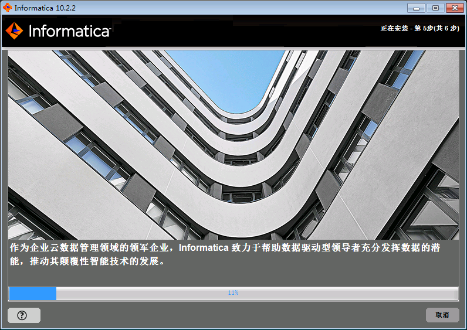
- 点击 完成。

Informatica BDM对接FusionInsight HD¶
操作场景¶
Informatica BDM对接FusionInsight HD的HDFS和Hive。通过Informatica的Big Data Developer客户端实现Oracle数据库与HDFS和Hive之间互相上传/下载数据、HDFS与Hive互相上传/下载数据、HDFS/Hive与本地之间互相上传下载数据。
前提条件¶
-
已安装Informatica服务端和Big Data Developer客户端。
-
已将FusionInsight集群的节点主机名与IP的映射关系加入到Informatica Server安装节点的
/etc/hosts文件中。

-
安装Infomatica服务端节点的时间与FusionInsight HD集群的时间要保持一致，时间差小于5分钟。
-
准备数据。
- 本地
登录Informatica Server安装节点，在
/tmp目录下创建文件 user_local_to_hdfs.csv，操作命令如下。并且将 user_local_to_hdfs.csv 拷贝至安装Big Data Developer客户端的window系统，例如C:\目录下。su - infa cd /tmp vi user_local_to_hdfs.csv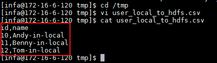
user_local_to_hdfs.csv文件内容如下所示：
id,name 10,Andy-in-local 11,Benny-in-local 12,Tom-in-local -
HDFS文件系统
登录FusionInsight集群客户端，执行以下命令在HDFS文件系统的
/tmp目录创建两个文件分别命名为 user_hdfs_to_oracle.csv 和 user_hdfs_to_hive.csv。cd /opt vi user_hdfs_to_oracle.csv vi user_hdfs_to_hive.csv hdfs dfs -put user_hdfs_to_* /tmpuser_hdfs_to_oracle.csv文件内容如下所示：
id,name 20,Andy-in-hdfs 21,Benny-in-hdfs 22,Tom-in-hdfsuser_hdfs_to_hive.csv文件内容如下所示：
id,name 30,Andy-in-hdfs 31,Benny-in-hdfs 32,Tom-in-hdfs -
Hive数据库
登录FusionInsight集群客户端，使用beeline客户端创建两个表分别命名为 user_hive_in 和 user_hive_out。
创建user_hive_in表示例如下：
CREATE TABLE IF NOT EXISTS user_hive_in(id INT, name STRING);创建user_hive_out表示例如下：
CREATE TABLE IF NOT EXISTS user_hive_out(id INT, name STRING); INSERT INTO user_hive_out VALUES (40,'Andy-in-hive'); INSERT INTO user_hive_out VALUES (41,'Benny-in-hive'); INSERT INTO user_hive_out VALUES (42,'Tom-in-hive'); -
Oracle数据库
登录安装Informatica Server节点，Oracle数据库用户mdl_user使用sqlplus客户端创建两个表分别命名为 user_oracle_in 和 user_oracle_out。
su - oracle sqlplus mdl_user/mdl_user创建user_oracle_in表示例如下：
CREATE TABLE user_oracle_in(ID INTEGER PRIMARY KEY,NAME VARCHAR2(30));创建user_oracle_out表示例如下：
CREATE TABLE user_oracle_out(ID INTEGER PRIMARY KEY,NAME VARCHAR2(30)); INSERT INTO user_oracle_out VALUES (50,'Andy-in-oracle'); INSERT INTO user_oracle_out VALUES (51,'Benny-in-oracle'); INSERT INTO user_oracle_out VALUES (52,'Tom-in-oracle'); -
HBase
登录FusionInsight集群客户端，使用hbase shell创建两个表分别命名为 USER_HBASE_IN 和 USER_HBASE_OUT。
创建命名空间INFA：
hbase shell create_namespace 'INFA'创建USER_HBASE_IN表示例如下：
create 'INFA.USER_HBASE_IN',{NAME=>'cf1'},{NAME=>'cf2'}创建USER_HBASE_OUT表示例如下：
create 'INFA.USER_HBASE_OUT',{NAME=>'cf1'},{NAME=>'cf2'} put 'INFA.USER_HBASE_OUT', '001','cf1:id','60' put 'INFA.USER_HBASE_OUT', '001','cf1:name','Andy-in-HBase' put 'INFA.USER_HBASE_OUT', '002','cf1:id','61' put 'INFA.USER_HBASE_OUT', '002','cf1:name','Benny-in-HBase' put 'INFA.USER_HBASE_OUT', '003','cf1:id','62' put 'INFA.USER_HBASE_OUT', '003','cf1:name','Tom-in-HBase'
操作步骤¶
建立项目¶
- 打开 Big Data Developer，点击 文件->连接到存储库。

- 点击 配置域， 点击 添加，“域名”输入自定义名称为 Domain_172-16-6-120，“主机名”输入Informatica Server安装节点对应的主机名 172-16-6-120，“端口号”输入安装Informatica Server时指定的端口 6005，点击 测试连接，返回“连接成功”则表示主机名为172-16-6-120的域可用。点击 确定 并 完成。

- 点击 浏览，选择 Domain_172-16-6-120.Model_Repository_Service，点击 下一步。
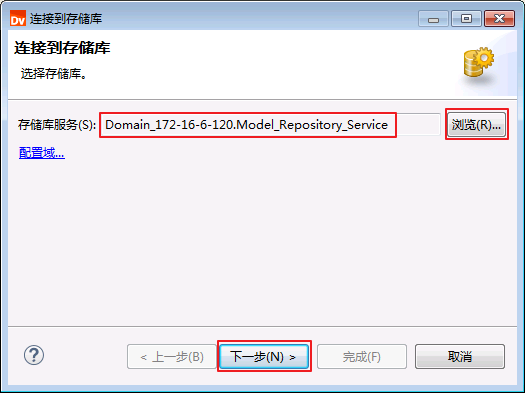
- 输入“用户名”为 Administrator，“密码”为 Huawei@123，点击 完成。

- 在“对象浏览器”下显示连接成功的存储库 Model_Repository_Service （Administrator）。
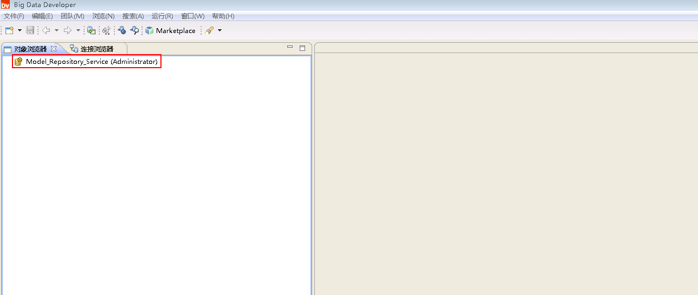
- 右键 Model_Repository_Service （Administrator） 选择 新建->项目。
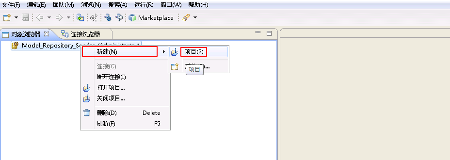
- “名称”输入输入自定义名称 fi_project，点击 下一步。
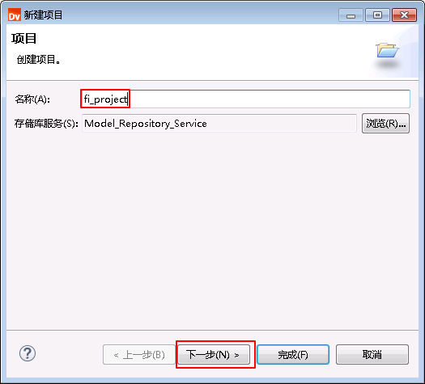
- 点击 完成。

创建关系数据对象¶
创建关系数据对象 - Oracle¶
-
右键 fi_project，选择 新建->数据对象。

-
选择 关系数据对象，点击 下一步。

-
点击“连接”的 浏览 按钮，选择连接 ORACLE。选择 从现有资源创建数据对象，点击“资源”的 浏览 按钮选择表 USER_ORACLE_IN 和 USER_ORACLE_OUT。点击 完成。


创建关系数据对象 - Hive¶
- 右键 fi_project，选择 新建->数据对象。
- 选择 关系数据对象，点击 下一步。
- 点击“连接”的 浏览 按钮，选择连接 HIVE_fusionginsighthd。选择 从现有资源创建数据对象，点击“资源”的 浏览 按钮选择表 user_hive_in 和 user_hive_out。点击 完成。

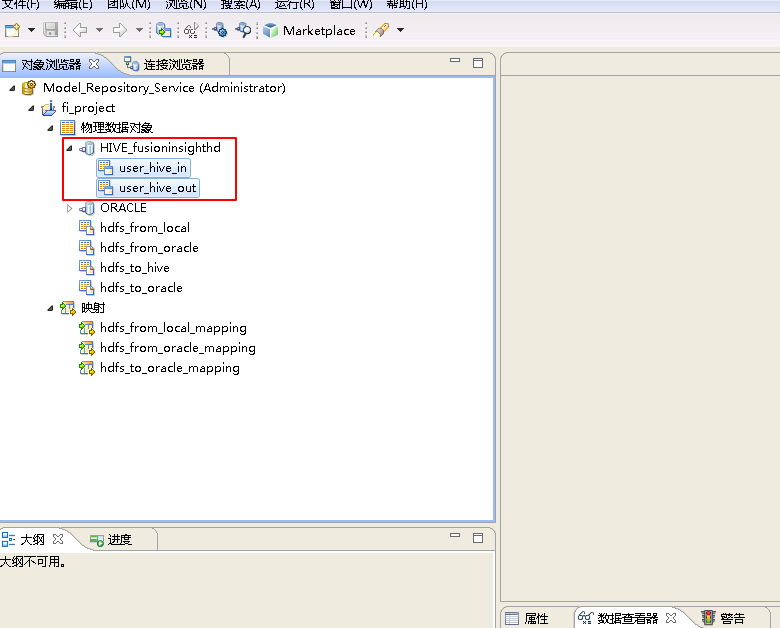
创建HBase数据对象¶
- 登录FusionInsight Manager将Zookeeper组件的配置 enforce.auth.enabled 修改为 false 保存后，并 重启 Zookeeper以及其上层服务。
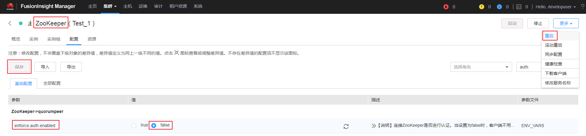
- 右键 fi_project，选择 新建->数据对象。
- 选择 HBase数据对象，点击 下一步。
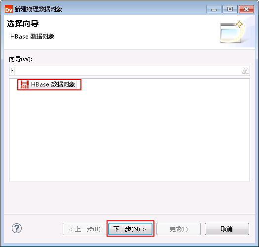
- “名称”自定义为 USER_HBASE_IN，点击“连接”的 浏览 按钮，选择连接 HBASE_fusionginsighthd。选择 从现有资源创建数据对象，点击“选定资源”的 添加 按钮选择表 INFA.USER_HBASE_IN 。点击 下一步。
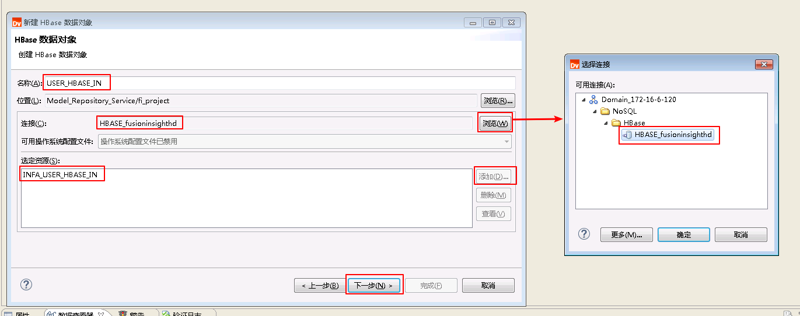
- 勾选 cf1，选择 添加列，点击 添加 按钮添加两列名称分别为 id 和 name。点击 下一步。

- 勾选 包含行ID，点击 下一步。
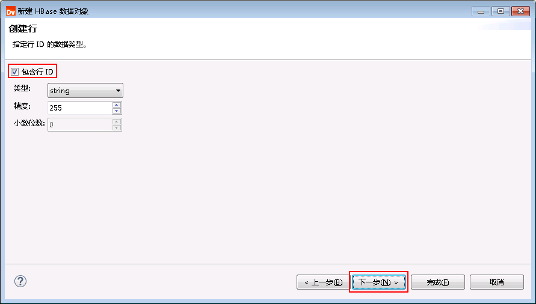
- 点击 完成。

- 同样地新增HBase表 INFA.USER_HBASE_OUT。
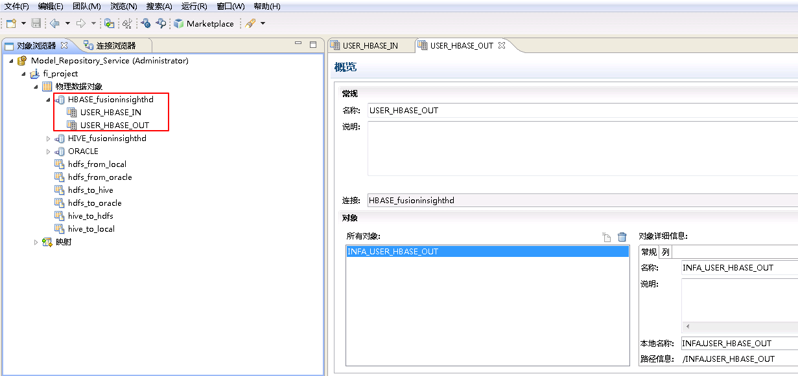
Informatica BDM对接FusionInsight HDFS¶
HDFS from Local¶
将安装Informatica Server节点的本地文件/tmp/user_local_to_hdfs.csv上传至FusionInsight HD的HDFS文件系统并命名为user_hdfs_from_local.csv。
- 右键 fi_project，选择 新建->数据对象。
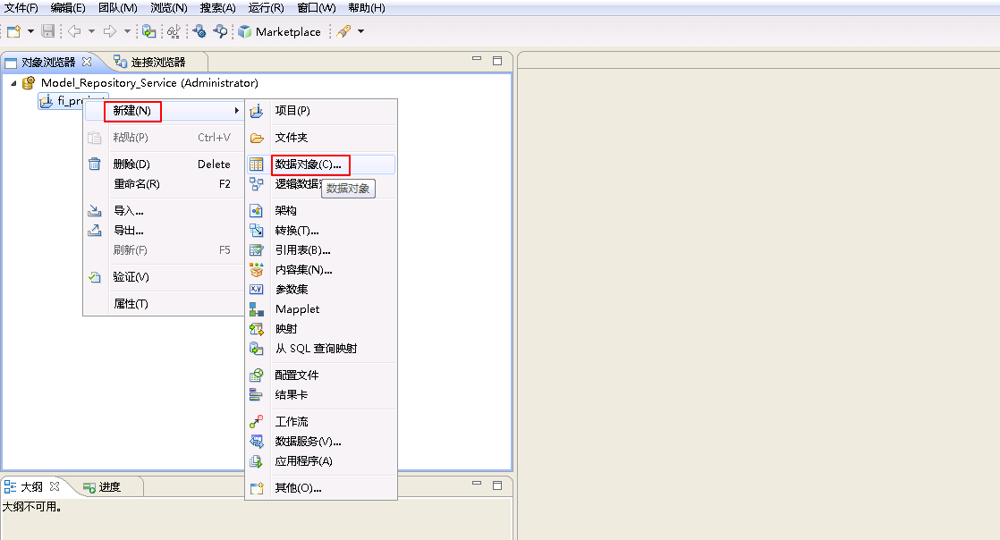
- 选择 平面文件数据对象，点击 下一步。

- 选择 从现有平面文件创建 并点击 浏览 选择
C:\user_local_to_hdfs.csv，“名称”自定义为 hdfs_from_local，点击 下一步。

- “格式”选择 带分隔符，点击 下一步。
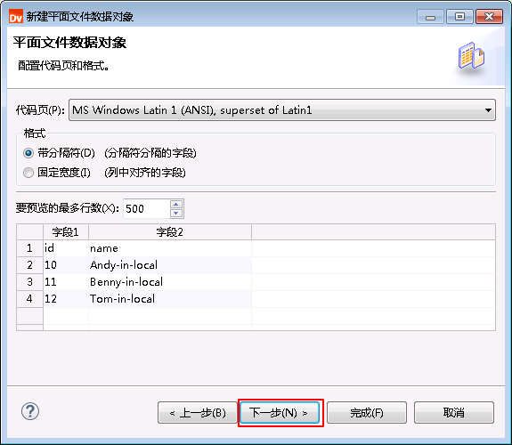
- “分隔符”选择 逗号，勾选 导入第一行中的列名称，其余保持默认选项，点击 完成。
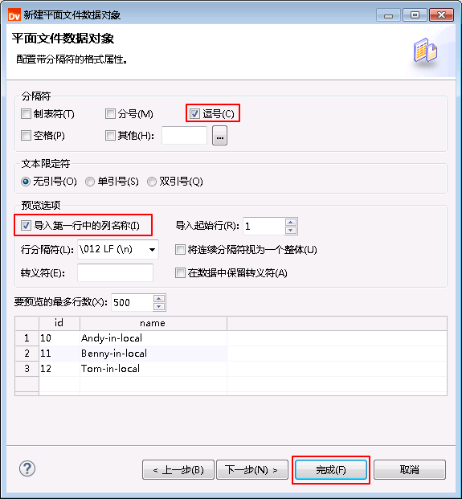
- 选择数据对象 hdfs_from_local，设置 高级 属性后保存。
设置 运行时：读取 的属性。“源文件名”为 user_local_to_hdfs.csv，“源文件目录” 为 /tmp/。

设置 运行时：写入 的属性。“输出文件目录” 为 /tmp/，“输出文件名”为 user_hdfs_from_local.csv，“连接类型”选择 Hadoop文件系统，“连接名称”点击 浏览 选择 HDFS_fusioninsighthd。“Ctrl+s”保存。

- 右键 fi_project，选择 新建->映射。

- “名称”自定义为 hdfs_from_local_mapping，点击 完成。
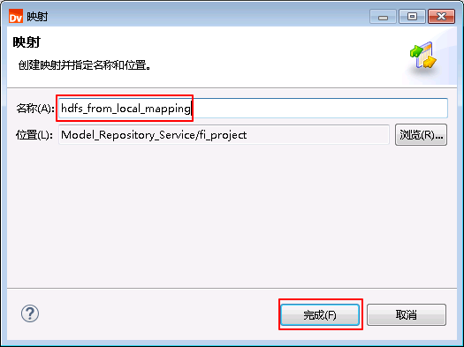
- 将“物理数据对象” hdfs_from_local 拖曳至“映射” hdfs_from_local_mapping 的 默认视图 中，并选择为 读取。
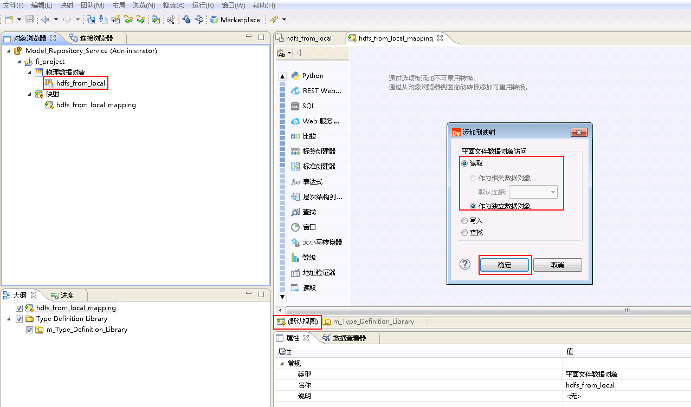
- 类似地将“物理数据对象” hdfs_from_local 拖曳至“映射” hdfs_from_local_mapping 的 默认视图 中，并选择为 写入。点击mapping的空白处确认 属性->运行时->验证环境 为 本地。

- 右键mapping的空白处，选择 运行映射。
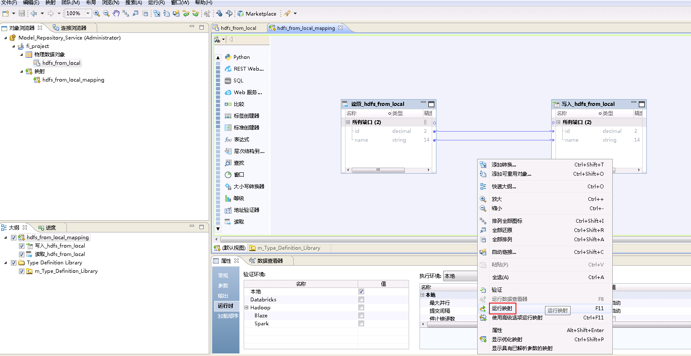
- mapping运行成功之后，登录FusionInsight集群客户端，执行
hdfs dfs -cat /tmp/user_hdfs_from_local.csv查看mapping产生的文件“user_hdfs_from_local.csv”。

HDFS from Oracle¶
获取Oracle数据库表USER_ORACLE_OUT的数据上传至FusionInsight HD的HDFS文件系统并命名为user_hdfs_from_oracle.csv。
- 参考创建“平面文件数据对象” hdfs_from_local 的操作步骤，创建“平面文件数据对象” hdfs_from_oracle。
hdfs_from_oracle**的 **高级 属性中，不需要设置 运行时：读取 的相关参数。设置 运行时：写入 的属性：“输出文件目录” 为 /tmp/，“输出文件名”为 user_hdfs_from_oracle.csv，“连接类型”选择 Hadoop文件系统，“连接名称”点击 浏览 选择 HDFS_fusioninsighthd。“Ctrl+s”保存。

- 右键 fi_project，选择 新建->映射。

- “名称”自定义为 hdfs_from_oracle_mapping，点击 完成。

- “hdfs_from_oracle_mapping”的配置如下：
将“物理数据对象” ORACLE->USER_ORACLE_OUT 拖曳至 默认视图 中，并选择为 读取。
将“物理数据对象” hdfs_from_oracle 拖曳至 默认视图 中，并选择为 写入。
将“读取_USER_ORACLE_OUT”和“写入_hdfs_from_oracle”对应的列连线。
点击mapping的空白处确认 属性->运行时->验证环境 为 本地。

- 右键mapping的空白处，选择 运行映射。

- mapping运行成功之后，登录FusionInsight集群客户端，执行
hdfs dfs -cat /tmp/user_hdfs_from_oracle.csv查看mapping产生的文件“user_hdfs_from_oracle.csv”。
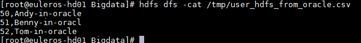
HDFS to Oracle¶
将FusionInsight HD的HDFS系统文件user_hdfs_to_oracle.csv数据上传至Oracle数据库表USER_ORACLE_IN。
- 参考创建“平面文件数据对象” hdfs_from_local 的操作步骤，创建“平面文件数据对象” hdfs_to_oracle。
hdfs_to_oracle**的 **高级 属性中，不需要设置 运行时：写入 的相关参数。设置 运行时：读取 的属性：“源文件名”为 user_hdfs_to_oracle.csv，“源文件目录” 为 /tmp/，“连接类型”选择 Hadoop文件系统，“连接名称”点击 浏览 选择 HDFS_fusioninsighthd。

- 右键 fi_project，选择 新建->映射。
- “名称”自定义为 hdfs_to_oracle_mapping，点击 完成。
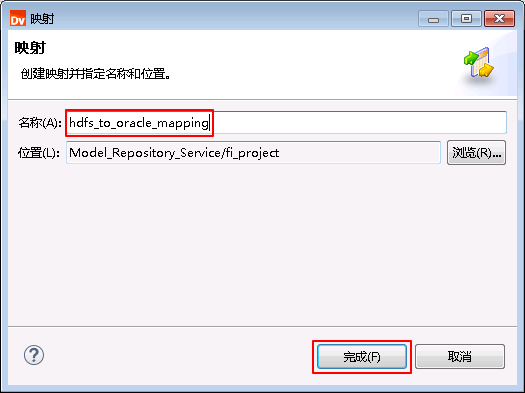
- “hdfs_to_oracle_mapping”的配置如下：
将“物理数据对象” hdfs_to_oracle 拖曳至 默认视图 中，并选择为 读取。
将“物理数据对象” ORACLE->USER_ORACLE_IN 拖曳至 默认视图 中，并选择为 写入。
将“读取_hdfs_to_oracle”和“写入_USER_ORACLE_IN”对应的列连线。
点击mapping的空白处确认 属性->运行时->验证环境 为 本地。

- 右键mapping的空白处，选择 运行映射。
- mapping运行成功之后，登录安装Informatica Server节点，Oracle数据库用户mdl_user使用sqlplus客户端查询表“USER_ORACLE_IN”数据。
su - oracle
sqlplus mdl_user/mdl_user
select * from USER_ORACLE_IN;
HDFS to Hive¶
将FusionInsight HD的HDFS系统文件user_hdfs_to_hive.csv数据上传至Hive数据库表user_hive_in。
- 参考创建“平面文件数据对象” hdfs_from_local 的操作步骤，创建“平面文件数据对象” hdfs_to_hive。
hdfs_to_hive**的 **高级 属性中，不需要设置 运行时：写入 的相关参数。设置 运行时：读取 的属性：“源文件名”为 user_hdfs_to_hive.csv，“源文件目录” 为 /tmp/，“连接类型”选择 Hadoop文件系统，“连接名称”点击 浏览 选择 HDFS_fusioninsighthd。

- 右键 fi_project，选择 新建->映射。
- “名称”自定义为 hdfs_to_hive_mapping，点击 完成。

- “hdfs_to_hive_mapping”的配置如下：
将“物理数据对象” hdfs_to_hive 拖曳至 默认视图 中，并选择为 读取。
将“物理数据对象” HIVE_fusionginsighthd->user_hive_in 拖曳至 默认视图 中，并选择为 写入。
将“读取_hdfs_to_hive”和“写入_user_hive_in”对应的列连线。
点击mapping的空白处确认 属性->运行时->验证环境 为 本地。
- 右键mapping的空白处，选择 运行映射。
- mapping运行成功之后，登录FusionInsight集群客户端，使用beeline客户端查询表 user_hive_in 数据。
beeline
select * from user_hive_in;

Informatica BDM对接FusionInsight Hive¶
Hive to Local¶
将FusionInsight HD的Hive数据库表user_hive_out数据下载至安装Informatica Server节点的本地文件/tmp/user_local_from_hive.csv。
- 参考创建“平面文件数据对象” hdfs_from_local 的操作步骤，创建“平面文件数据对象” hive_to_local。
hive_to_local**的 **高级 属性中，不需要设置 运行时：读取 的相关参数。设置 运行时：写入 的属性：“输出文件目录” 为 /tmp/，“输出文件名”为 user_local_from_hive.csv。

- 右键 fi_project，选择 新建->映射。
- “名称”自定义为 hive_to_local_mapping，点击 完成。

- “hive_to_local_mapping”的配置如下：
将“物理数据对象” HIVE_fusionginsighthd->user_hive_out 拖曳至 默认视图 中，并选择为 读取。
将“物理数据对象” hive_to_local 拖曳至 默认视图 中，并选择为 写入。
将“读取_user_hive_out”和“写入_hive_to_local”对应的列连线。
点击mapping的空白处确认 属性->运行时->验证环境 为 本地。
- 右键mapping的空白处，选择 运行映射。

- mapping运行成功之后，登录Informatica Server安装节点，查看文件
/tmp/user_local_from_hive.csv。
cat /tmp/user_local_from_hive.csv

Hive to Oracle¶
将FusionInsight HD的Hive数据库表user_hive_out数据上传至Oracle数据库表USER_ORACLE_IN。
- 右键 fi_project，选择 新建->映射。
- “名称”自定义为 hive_to_oracle_mapping，点击 完成。
- “hive_to_oracle_mapping”的配置如下：
将“物理数据对象” HIVE_fusionginsighthd->user_hive_out 拖曳至 默认视图 中，并选择为 读取。
将“物理数据对象” ORACLE->USER_ORACLE_IN 拖曳至 默认视图 中，并选择为 写入。
将“读取_user_hive_out”和“写入_USER_ORACLE_IN”对应的列连线。
点击mapping的空白处确认 属性->运行时->验证环境 为 本地。
- 右键mapping的空白处，选择 运行映射。

- mapping运行成功之后，登录安装Informatica Server节点，Oracle数据库用户mdl_user使用sqlplus客户端查询表“USER_ORACLE_IN”数据。
su - oracle
sqlplus mdl_user/mdl_user
select * from USER_ORACLE_IN;
Hive from Oracle¶
获取Oracle数据库表USER_ORACLE_OUT的数据上传至FusionInsight HD的Hive数据库表user_hive_in。
- 右键 fi_project，选择 新建->映射。
- “名称”自定义为 hive_from_oracle_mapping，点击 完成。

- “hive_from_oracle_mapping”的配置如下：
将“物理数据对象” ORACLE->USER_ORACLE_OUT 拖曳至 默认视图 中，并选择为 读取。
将“物理数据对象” HIVE_fusionginsighthd->user_hive_in 拖曳至 默认视图 中，并选择为 写入。
将“读取_USER_ORACLE_OUT”和“写入_user_hive_in”对应的列连线。
点击mapping的空白处确认 属性->运行时->验证环境 为 本地。

- 右键mapping的空白处，选择 运行映射。

- mapping运行成功之后，登录FusionInsight集群客户端，使用beeline客户端查询表 user_hive_in 数据。
beeline
select * from user_hive_in;
Hive to HDFS¶
将FusionInsight HD的Hive数据库表user_hive_out数据下载至HDFS文件系统的/tmp/user_hdfs_from_hive.csv。
- 参考创建“平面文件数据对象” hdfs_from_local 的操作步骤，创建“平面文件数据对象” hive_to_hdfs。
hive_to_hdfs**的 **高级 属性中，不需要设置 运行时：读取 的相关参数。设置 运行时：写入 的属性：“输出文件目录” 为 /tmp/，“输出文件名”为 user_hdfs_from_hive.csv，“连接类型”选择 Hadoop文件系统，“连接名称”点击 浏览 选择 HDFS_fusioninsighthd。

- 右键 fi_project，选择 新建->映射。
- “名称”自定义为 hive_to_hdfs_mapping，点击 完成。

- “hive_to_hdfs_mapping”的配置如下：
将“物理数据对象” HIVE_fusionginsighthd->user_hive_out 拖曳至 默认视图 中，并选择为 读取。
将“物理数据对象” hive_to_hdfs 拖曳至 默认视图 中，并选择为 写入。
将“读取_user_hive_out”和“写入_hive_to_hdfs”对应的列连线。
点击mapping的空白处确认 属性->运行时->验证环境 为 本地。
- 右键mapping的空白处，选择 运行映射。
- mapping运行成功之后，登录FusionInsight集群客户端，执行
hdfs dfs -cat /tmp/user_hdfs_from_hive.csv查看mapping产生的文件“user_hdfs_from_hive.csv”。
cat /tmp/user_hdfs_from_hive.csv

Informatica BDM对接FusionInsight HBase¶
HBase to Local¶
将FusionInsight HD的HBase表USER_HBASE_OUT数据下载至安装Informatica Server节点的本地文件/tmp/user_local_from_hbase.csv。
- 参考创建“平面文件数据对象” hdfs_from_local 的操作步骤，创建“平面文件数据对象” hbase_to_local。
hbase_from_local**的 **高级 属性中，不需要设置 运行时：读取 的相关参数。设置 运行时：写入 的属性：“输出文件目录” 为 /tmp/，“输出文件名”为 user_local_from_hbase.csv。

- 右键 fi_project，选择 新建->映射。
- “名称”自定义为 hbase_to_local_mapping，点击 完成。

- “hbase_to_local_mapping”的配置如下：
将“物理数据对象” HBASE_fusionginsighthd->USER_HBASE_OUT 拖曳至 默认视图 中，并选择为 读取，点击 新建操作。
“名称”自定义为 USER_HBASE_OUT_Read，“功能”选择 读取，点击 添加 按钮选择 INFA_USER_HBASE_OUT，点击 完成。

“选择操作”为 USER_HBASE_OUT_Read，点击 确定。
将“物理数据对象” hbase_to_local 拖曳至 默认视图 中，并选择为 写入。
将“USER_HBASE_OUT_Read”和“写入_hbase_to_local”对应的列连线。
点击mapping的空白处确认 属性->运行时->验证环境 为 本地。
- 右键mapping的空白处，选择 运行映射。
- mapping运行成功之后，登录Informatica Server安装节点，查看文件
/tmp/user_local_from_hbase.csv。
cat /tmp/user_local_from_hbase.csv
HBase from Oracle¶
获取Oracle数据库表USER_ORACLE_OUT的数据上传至FusionInsight HD的HBase表USER_HBASE_IN。
- 右键 fi_project，选择 新建->映射。
- “名称”自定义为 hbase_from_oracle_mapping，点击 完成。
- “hbase_from_oracle_mapping”的配置如下：
将“物理数据对象” ORACLE->USER_ORACLE_OUT 拖曳至 默认视图 中，并选择为 读取。
将“物理数据对象” HBASE_fusionginsighthd->USER_HBASE_IN 拖曳至 默认视图 中，并选择为 写入，点击 新建操作。
“名称”自定义为 USER_HBASE_IN_Write，“功能”选择 写入，点击 添加 按钮选择 INFA_USER_HBASE_IN，点击 完成。
“选择操作”为 USER_HBASE_IN_Write，点击 确定。
将“读取_USER_ORACLE_OUT”和“USER_HBASE_IN_Write”对应的列连线。
点击mapping的空白处确认 属性->运行时->验证环境 为 本地。

- 右键mapping的空白处，选择 运行映射。

- mapping运行成功之后，登录FusionInsight集群客户端，使用hbase shell客户端查询表 INFA.USER_HBASE_IN 数据。
hbase shell
scan 'INFA.USER_HBASE_IN'

FAQ¶
-
执行./infaservice.sh startup启动Infomatica Server时，返回ERROR: Node configuration file not accessible or invalid。
【问题描述】
在执行./infaservice.sh startup启动infomatica server时，返回ERROR: Node configuration file not accessible or invalid。
或者在INFA_HOME/tomcat/bin目录执行./startup.sh启动tomcat后，没查询到java进程，在INFA_HOME/tomcat/logs/catalina.out返回错误java.io.FileNotFoundException: null/isp/config/nodemeta.xml (No such file or directory)。

【解决方法】
问题原因：$INFA_HOME/isp/config/nodemeta.xml的所有者和所属组不正确。infa用户无法获取到nodemeta.xml。

root用户登录并切换至
$INFA_HOME/isp/config/，执行 chown -R infa:oinstall nodemeta.xml 修改nodemeta.xml所有者为infa和所属用户组为oinstall。建议执行 chown -R infa:oinstall /opt/informatica/10.2.2/ 修改Informatica Server所有文件的所有者为infa和所属用户组为oinstall。 -
向Hive数据库写入数据失败
【问题描述】
运行mapping向Hive数据库的某一张表写入数据，查询目标表时，没有数据写入。
【解决方法】
如果向Hive表写入数据，确认以下两点是否已配置：
-
配置HIVE连接以下两个属性的值：“HDFS上的Hive暂存目录”设置为 /user/hive/warehouse，“Hive暂存数据库名称”设置为 default。

-
将集成配置的 hdfs_site_xml 的 dfs.client.failover.proxy.provider.hacluster 的值修改为 org.apache.hadoop.hdfs.server.namenode.ha.ConfiguredFailoverProxyProvider。
选择群集“FusionInsightHD”，点击 hdfs_site_xml 的编辑按钮，选中 dfs.client.failover.proxy.provider.hacluster 后点击 编辑，“覆盖的值”输入 org.apache.hadoop.hdfs.server.namenode.ha.ConfiguredFailoverProxyProvider，点击 确定。点击 确定 完成修改。
-
Big Data Developer添加Hbase数据对象时返回KeeperErrorCode = ConnectionLoss for /hbase
【问题描述】
新建HBase数据对象，点击 添加 获取HBase表时，返回错误SDK_APP_COM_20000。 Java.lang.RuntionException:org.apache.hadoop.hbase.ZookeeperConnectionException: Can’t connet to Zookeeper KeeperErrorCode = ConnectionLoss for /hbase

FusionInsight HD的zookeeper日志，例如：/var/log/Bigdata/zookeeper/quorumpeer/zookeeper-omm-server-euleros-hd01.log，返回类似以下的错误：
ERROR | NIOWorkerThread-41 | Authentication failed as scheme is not valid: ['ip,'172.16.6.120], expected scheme zookeeper.enforce.auth.scheme=sasl
【解决方法】
将Zookeeper组件的配置 enforce.auth.enabled 修改为 false 保存后，并 重启 Zookeeper以及其上层服务。
- 如何查看mapping的日志
【问题描述】
如果mapping运行完成之后，没有写入数据或者mapping运行失败等，如何获取mapping运行的详细日志？
【解决方法】
Mapping运行的日志存放于Informatica Server安装节点的$INFA_HOME/logs/node01_172-16-6-120/services/DataIntegrationService/disLogs/ms目录下。